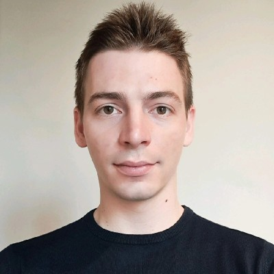

AI Research Scientist · PhD Candidate
Bojan Derajić
Learning-based safe robot navigation in unknown and dynamic environments

About
I am an AI Research Scientist at the AI Lab Berlin of AUMOVIO (formerly Continental Automotive), and a PhD candidate at the Technical University of Berlin as part of the IMRC Lab. My research focuses on safe motion planning and control of mobile robots operating in dynamic and unknown environments — settings where both classical guarantees and data-driven flexibility are needed to make a system trustworthy.
In my approach I bring together control theory and machine learning: model predictive control, control barrier functions, hypernetworks, neural constraints, etc. Before my PhD, I obtained a MSc degree from the University of Belgrade (thesis on adaptive nonlinear MPC for quadcopters) and a BSc at the University of Banja Luka (thesis on trajectory planning for robot manipulators). Alongside my research, I have worked as a Research and Teaching Assistant and have filed five patent applications, four of them as first inventor.
Selected Publications
Full list on Google Scholar →-
CN-CBF: Composite Neural Control Barrier Function for Safe Robot Navigation in Dynamic Environments
arXiv preprint, Mar 2026 · arXiv:2603.06921 · preprint
-
ORN-CBF: Learning Observation-conditioned Residual Neural Control Barrier Functions via Hypernetworks
IEEE International Conference on Robotics and Automation (ICRA), 2026 · arXiv · accepted
-
Residual Neural Terminal Constraint for MPC-based Collision Avoidance in Dynamic Environments
Conference on Robot Learning (CoRL), 2025 · PMLR
-
Learning Maximal Safe Sets Using Hypernetworks for MPC-Based Local Trajectory Planning in Unknown Environments
IEEE Robotics and Automation Letters (RA-L), 2025 · IEEE Xplore
Education
-
2023 – Present
PhD in Electrical Engineering and Computer Science
Technical University of Berlin, Germany
Research in robotics and AI at the IMRC Lab. Supervising master's students.
-
2021 – 2022
MSc in Electrical Engineering and Computer Science
University of Belgrade, Serbia
Thesis: "Adaptive Nonlinear Model Predictive Control for Quadcopters". GPA: 10.0 / 10.0. Coursework included Machine Learning, Robotics Systems, Computer Vision, and Optimal Control Systems.
-
2017 – 2021
BSc in Electrical Engineering and Computer Science
University of Banja Luka, Bosnia and Herzegovina
Thesis: "Trajectory Planning". GPA: 10.0 / 10.0. Awarded the Golden Badge of the University of Banja Luka and the Nikola Tesla Medal.
Experience
-
Apr 2023 – Present
AI Research Scientist
AI Lab Berlin · Continental Automotive GmbH / AUMOVIO GmbH
Research on AI-enhanced motion planning and control in the nxtAIM project, and real-time performance optimization for mobile robot teleoperation in the BeIntelli project. Filed five patent applications, four as first inventor.
-
Dec 2021 – Mar 2023
Research and Teaching Assistant
Faculty of Electrical Engineering, University of Banja Luka
Research on adaptive optimal control for mobile robots. Delivered tutorials on control systems and AI courses.
Skills
Programming
Tools & Frameworks
Professional
Awards & Honors
- Golden Badge of the University of Banja Luka — University of Banja Luka, Nov 2021
- Nikola Tesla Medal — TESLA FORUM, Nov 2021
- First prize, Electrical Circuit Theory (individual competition) — Elektrijada, May 2019
- First prize, Mathematics 2 (individual competition) — Elektrijada, May 2019
- Gold medal, Electrical Circuit Theory (team competition) — Elektrijada, May 2019
- Silver medal, Mathematics 2 (team competition) — Elektrijada, May 2019
- First prize, Fundamentals of Electrical Engineering and Electronics — National Competition — Pedagogical Institute of Republika Srpska, Apr 2017